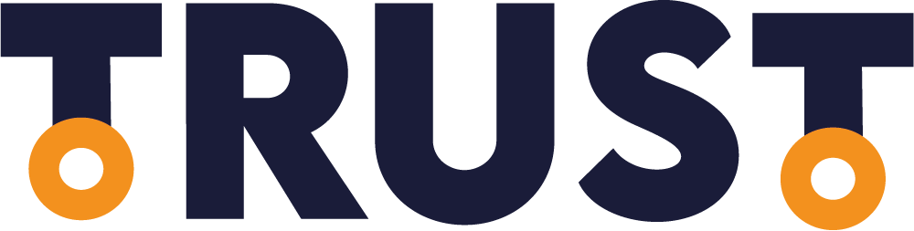

D'après nos statistiques de sondage, 45% des personnes intérrogés ne sont pas au courant des stratégies RSE mises en places par les entreprises.
Vous aussi peut-être ? Laissez-nous vous la définir.
La RSE (Responsabilité Sociétale des Entreprises) représente la prise en compte par les entreprises des enjeux environnementaux, sociaux, économiques et éthiques dans leurs activités.
Maintenant que nous savons tous ce que représente la RSE, il est temps de vous exposer les problèmes rencontrés actuellement dans le monde des entreprises.
D'après les statistques que nous avons pu récupérer, nous avons remarqué quelques chiffres intéréssants mettant en avant certains points qui démontrent le manque d'impact de la RSE au sein des entreprises d'aujourd'hui.
Pour 63% des personnes intérrogés, la parité homme/femme est respecté au sein de leur entreprise, contre 30% pour qui la parité n'est pas respectée et 7% qui ne savent pas. Aussi très intéréssant, pour 26% de ces personnes intérrogés la rémunération n'est pas identique entre les hommes et les femmes pour un même poste, sachant que 33% n'ont pas su répondre à cette question.
Pour 52% des personnes intérrogés, leur entreprise ne met actuellement pas en place de mesures en faveur de l'environnement.
Pour 44% des personnes intérrogés, leur entreprise ne leur permet pas de maintenir et de développer des compétences par le biais de formations.
Pour 67% des personnes intérrogés, aucune personne handicapée ne se trouve au sein de leur entreprise.
Aujourd’hui, notre système ne permet pas un développement durable. On se dirige vers une extinction de notre société. Nous sommes tous concernés par cette problématique. Nous sommes sollicités pour adopter des comportements plus respectueux, qui répondent aux objectifs du développement durable. Ce changement de nos habitudes, de notre mode de vie et de consommation est difficile. Certains acteurs sont réticents, les choses ne bougent pas assez vite. Les grandes entreprises sont pointées du doigts. On les accuse de privilégier le profit à leur responsabilité sociale.
C'est dans ce contexte que le projet "TRUST" voit le jour, une agence spécialisée dans la notation d’entreprise tenant compte des critères RSE et du bien-être en entreprise.
Nous délivrons le Label TRUST aux entreprises remplissant nos critères d’évaluation basé sur le développement durable.
Notre mission ?
- Créer une société meilleure en poussant les entreprises à adopter un comportement éthique.
- Aiguiller les consommateurs et employés sur le fonctionnement des entreprises.
Pour atteindre notre objectif, nous mettons en place un site web qui a pour but de répertorier les entreprises évaluées par notre agence, ainsi que de montrer leurs résultats obtenus.
Social / Bien-être
Environnement
Economique